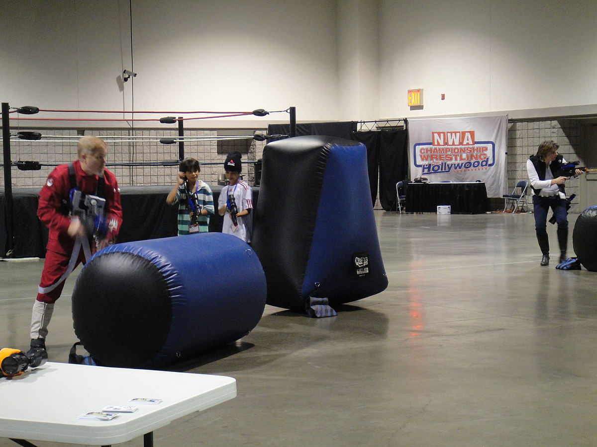

Laser tag (ismine rağmen lazer aslında güvenlik endişeleri nedeniyle kullanılmamaktadır ), kızılötesi hafif silahlar ve oyuncuların vücuduna takılan sensörler ile oynanan bir tag oyunudur . Laser tag, 1979'daki doğumundan bu yana hem iç hem de dış mekan oyunlarında gelişti ve her biri yok etme, bayrağı ele geçirme , hakimiyet, VIP koruma, (genellikle bilimkurgu ) rol oynama vb . airsoft , lazer etiketi mermi içermediği için ağrısızdır ve çok güvenlidir Darbeler ve kapalı mekan oyunlarının fiziksel olarak daha az zorlayıcı olduğu düşünülebilir çünkü çoğu kapalı alan koşmayı veya kabadayılığı yasaklar.
Laser tag, katılımcıların belirlenen hedefleri etiketlemek için kızılötesi yayan hafif silahlar kullandığı eğlence amaçlı bir atış sporudur . Kızılötesine duyarlı sinyal cihazları genellikle her oyuncu tarafından isabetleri kaydetmek için giyilir ve bazen oyunun oynandığı arenaya entegre edilir.
Milton Bradley'in South Bend Electronics markası tarafından üretilen Star Trek Electronic Phasers oyuncağının piyasaya sürüldüğü 1979'daki doğumundan bu yana , lazer etiketi hem iç mekan hem de dış mekan oyun tarzlarına dönüştü ve yakın dövüş , rol simülasyonları içerebilir. oyun tarzı macera oyunları veya taktik konfigürasyonlar ve kesin oyun hedefleri dahil olmak üzere rekabetçi spor etkinlikleri.
Lazer etiketi, geniş bir yaş aralığında popülerdir. Laser tag turnuvaları yerel, bölgesel/eyalet, bölgeler arası, ulusal, iki taraflı uluslararası ve uluslararası seviyeler için düzenlenir.
MILES gibi daha sofistike lazer etiketi biçimleri, ölümcül olmayan savaş eğitimine izin vermek için ordular tarafından ( boşluklarla birlikte) kullanılır.
1970'lerin sonunda ve 1980'lerin başında, Birleşik Devletler Ordusu , savaş eğitimi için kızılötesi ışınlar kullanan bir sistem kurdu . Bu MILES sistemi, ışınların isabet alan alıcılara "ateşlenmesi" açısından lazer etiketi gibi işlev gördü.
Kızılötesi ışığı ve buna karşılık gelen bir sensörü kullandığı bilinen ilk oyuncak, 1979'da Star Trek: The Motion Picture'ın çıkışına eşlik edecek Star Trek Elektronik Phaser Guns seti olarak üretildi ve pazarlandı.
1982'de George Carter III , oyunun puanlı bir versiyonunu oynamak için arena tabanlı bir sistem tasarlama sürecine başladı; bu, ilk olarak 1977'de Star Wars filmini izlerken aklına gelen bir olasılıktı . İlk Foton merkezinin Büyük Açılışı 28 Mart 1984'te Dallas, Teksas'ta yapıldı. Carter, lazer etiket endüstrisine yaptığı katkılardan dolayı 17 Kasım 2005'te Uluslararası Lazer Etiket Derneği tarafından onurlandırıldı. Ödül , "Lazer etiketi endüstrisinin Mucidi ve Kurucusu olduğu için George A. Carter III'e takdim edilmiştir" şeklinde kazınmıştır.
1986'da ilk Photon oyuncakları, Worlds of Wonder'dan Lazer Tag oyuncakları ve diğer birkaç benzer kızılötesi ve görünür ışık tabanlı oyuncaklarla neredeyse aynı anda piyasaya çıktı . Worlds of Wonder 1988'de iflas etti ve kısa süre sonra 1989'da oyunların modası geçince Photon onu takip etti. Bugün dünyanın her yerinde çeşitli isimler ve markalar taşıyan lazer etiketli arenaların yanı sıra evde oyun oynamak için çok çeşitli tüketici ekipmanları ve dış mekan lazer etiketli arenalar ve işletmeler için profesyonel sınıf ekipman bulunmaktadır.
2010 yılında, Lee Weinstein'ın ilk ticari lazer etiket tesisini geliştirip açtığını iddia eden bir haber çıktı. Haziran 2011'de ILTA, Houston Şehri'nden Weinstein'ın "Yıldız Lazer Gücü"nün açılış tarihinin 16 Nisan 1985 olduğunu gösteren bir kamu kaydı talebinin sonuçlarını yayınladı.
Mart 2009'da Winnenden okul saldırısı üzerine Alman hükümeti, lazer etiketi ve paintball gibi oyunları şiddeti önemsizleştirdiği ve teşvik ettiği iddiasıyla yasaklayacağını duyurdu . Daha sonra bu iddiayı geri aldı.
Lazer etiket sistemleri, ışının ateşlenmesini izlemek için tipik olarak kızılötesi sinyal kullanır. Kapalı mekan oyunlarında, teatral sisle birleştirilmiş görünür bir ışık tipik olarak ateş sinyalinin iletilmesinde gerçek bir rolü olmamakla birlikte, ateşin görsel etkisini sağlar. Adına rağmen, lazer etiket ekipmanı, içerdiği potansiyel tehlikeler nedeniyle lazerleri ateşlemez. Bazı lazer etiketleri, kontrol noktalarını, yeniden doğma kutularını, taşınabilir ilk yardım kitlerini, kara mayınlarını, el bombası fırlatıcılarını ve el bombalarını simüle etmek için ek ekipman kullanabilir.